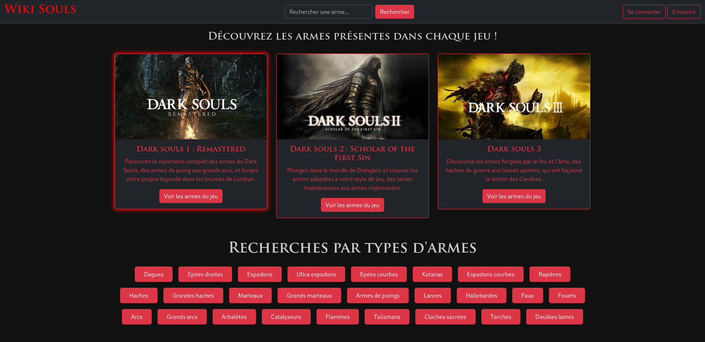
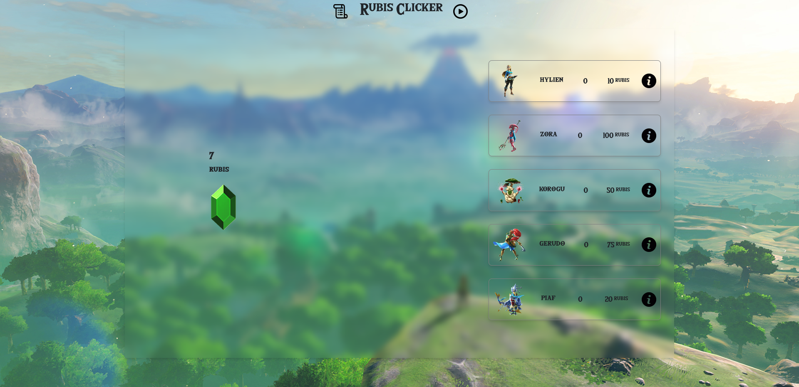
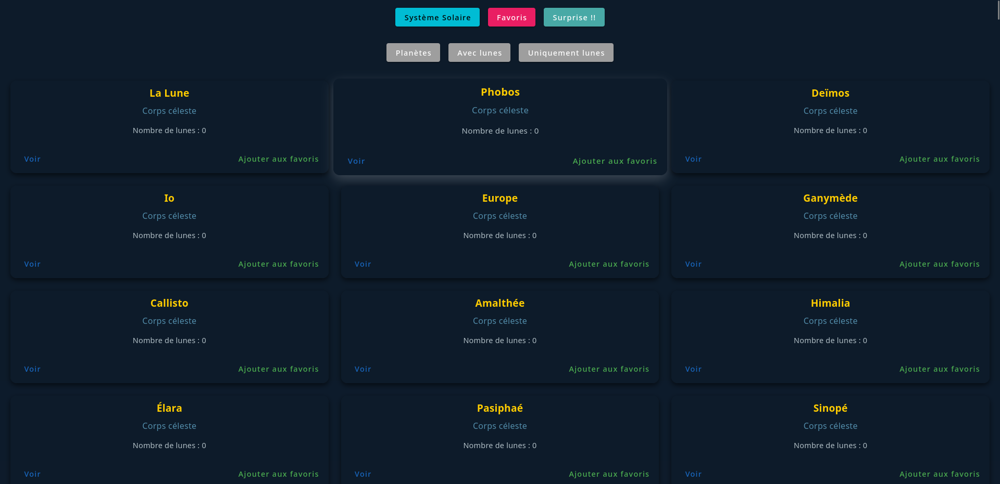
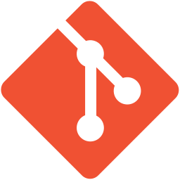

Accueil / Profil
Nom : Dewi GUERIN
Âge : 20 ans
Ville : Rennes
Parcours : Passionné par l’informatique depuis le lycée et diplômé d'un BTS SIO SLAM, je poursuis mes études en BAC +3 DevOps FullStack.
Formations
BTS SIO SLAM (2023-2025)
Diplômé - Spécialité Solutions Logicielles et Applications Métiers.
Développement d'applications, gestion de projet, bases de données, sécurité, travail en équipe.
Bac Général (2020-2023)
Spécialités : Mathématiques & Numérique et Sciences Informatiques (NSI)
Approfondissement en algorithmique, programmation et logique mathématique.
Parcours
Stages & Expériences
Retrouvez ici mes expériences professionnelles en entreprise durant le BTS SIO :
Stage 1 – Développement d'une application web de gestion d'emploi du temps
Entreprise : CETA
Technologies : HTML, CSS, PHP, SQL, JavaScript & bibliothèque (calendar.js)
Durée : 8 semaines
Stage 2 – Développement d'une application mobile et correction de bug sur une application mobile
Entreprise : Feldrise
Technologies : FlutterFlow, Flutter, Firebase & NoSQL
Durée : 7 semaines
Projets
Voici une sélection de projets réalisés en autonomie ou dans un cadre scolaire :
Wikisouls
Résumé : Application web développée sous Laravel permettant de répertorier et rechercher les armes de la série Dark Souls. Gestion de base de données, interface utilisateur responsive, et fonctionnalités avancées de filtrage.

Voir sur GitLabRubis Clicker
Résumé : Jeu web inspiré de Cookie Clicker, développé en JavaScript, dans l’univers de Zelda. Gestion de score, animations, sauvegarde locale et interface ludique.

Voir sur GitLabProjet Nasa
Résumé : Application web réalisée avec Vue.js présentant des informations et images sur le système solaire. Consommation d’API, affichage dynamique et responsive.

Voir sur GitLabCompétences & Technologies
Voici un aperçu des principaux langages, frameworks et outils que j'utilise au quotidien, avec pour chacun les domaines d'application et les bibliothèques associées.

Python
Développement de scripts, Réseau de neuronnes
- Bibliothèques : NumPy, Keras
- Compétences : Programmation orientée objet

JavaScript
Applications web dynamiques côté client et serveur.
- Frameworks/Bibliothèques : Vue.js, Node.js, jQuery, API
PHP
Développement web, sites dynamiques et API.
- Framework : Laravel
SQL / NoSQL
Gestion et conception de bases de données relationnelles et NoSQL.
- Bases : MySQL, PostgreSQL, Firebase
HTML / CSS
Création d'interfaces web modernes et responsives.
- Outils : Flexbox, Grid, animations CSS
- Framework : Boostrap
Autres
Outils et technologies complémentaires.
- Git, Linux, FlutterFlow, Flutter
Ce que je recherche
- Type de contrat : Alternance (contrat d’apprentissage ou de professionnalisation)
- Rythme souhaité : 2 semaines en entreprise / 1 semaine en formation
- Poste visé : Développeur FullStack, DevOps
- Technologies privilégiées : Python, JavaScript, PHP
- Localisation : Rennes et alentours, ou télétravail partiel
- Début de contrat : Dès que possible (année 2025-2026)
Je suis ouvert à toute proposition sérieuse et motivé à m’investir dans des missions variées et formatrices.
Contact
E-mail : dewi.guerin@gmail.com
 LinkedIn : dewi-guerin-434451290
LinkedIn : dewi-guerin-434451290

Téléphone : 07 68 44 26 40
À propos
Passionné par l’informatique depuis le lycée, je suis diplômé d’un BTS SIO SLAM et actuellement en BAC+3 DevOps FullStack.
Points forts : travail en équipe, autonomie, communication, gestion de projet, curiosité et veille technologique, résolution de problèmes.
Je recherche une alternance pour approfondir mes compétences en développement et DevOps, dans un environnement stimulant et innovant. J’aime relever des défis techniques, apprendre de nouvelles technologies et travailler en équipe sur des projets concrets.